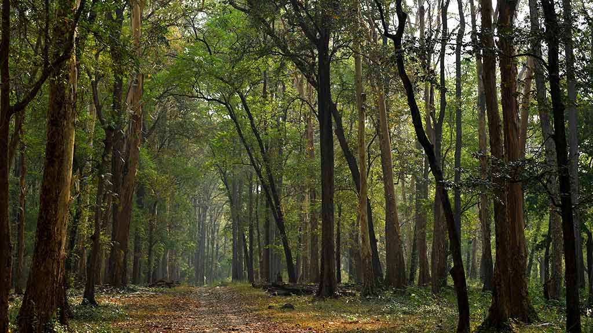
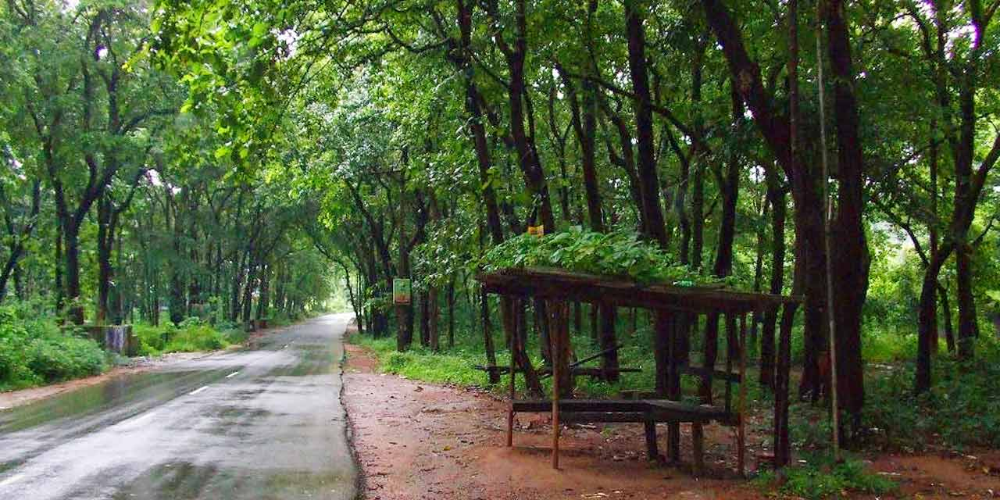

Nilambur
Malappuram
Nilambur is a major town, a municipality and a Taluk in the Malappuram district of the Indian state of Kerala. It is located close to the Nilgiris range of the Western Ghats on the banks of the Chaliyar River.This place is also often called as Teak Town by many because of the abundance of Nilambur teaks in this area; Which is a variety of a large, deciduous tree that occurs in mixed hardwood forests. Unlike many Municipalities of India; Nilambur is covered with large amounts of vegetation making it close to nature and hence make it very scenic and inspiring.
Nilambur is well connected to other parts of the Kerala and other parts of the country by road and rail networks. Kozhikode-Nilambur-Gudalur (SH 28) road which is a major interstate highway runs through the heart of Nilambur. Other State highways such as SH 39 (Perumbilavu - Nilambur Road) and SH 73 (Valanchery - Nilambur Road) also serves this town. Construction for Hill Highway is ongoing here. There are also wide and good quality direct road towards Kakkadampoyil of Kozhikode district from here. There is a large fleet of government and private buses and other transports serving this town. There is a KSRTC sub depot which serves the area operating both interstate and intrastate Public bus transport. This town is also served by a railway station called Nilambur road which is the terminus of Nilambur–Shoranur railway line. This railway station connects this town to other parts of India as it has regular trains which leads to shoranur junction which is the largest railway station of Kerala state.
Gallery

